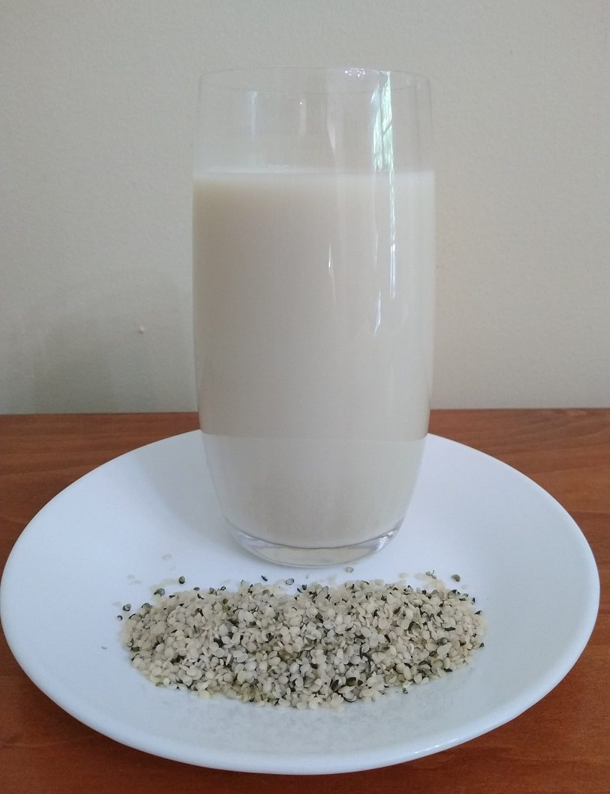

蔵のパン屋 堂の前
ギャラリー(イメージ)
台所まわりとパンの写真


写真はフリー素材のイメージです。お店のものではなく、お店で提供している商品を示すものでもありません。
制作側の連想
ミルクパンの部位を、配置図にしてみる
このサイトは、片手で持つ小さな鍋「ミルクパン」を横から見た図にしてみました。六つの部位に番号をふり、上の図と並べています。制作側の連想で、お店の理念・由来とは無関係です。実際の製品の仕様を示すものでもありません。
凡例
六つの部位
- 1注ぎ口縁の一部をくちばし状に尖らせた、液体を細く注ぐための部分。
- 2持ち手本体の横に伸びる、持ち上げたり傾けたりするための長い柄。
- 3吊り下げ穴柄の先にあけた、フックに掛けておくための小さな穴。
- 4縁(リム)本体の上端をぐるりと囲む、補強を兼ねた輪の部分。
- 5胴液体を入れる、まっすぐに立ち上がった側面の部分。
- 6底コンロの上に置く、平らな接地面になる部分。
ギャラリー(イメージ)
パンのほかの写真




写真はフリー素材のイメージです。提供内容を示すものではありません。
ご案内
お店のこと(確認できたものだけ)
| 所在地 | 〒411-0801 静岡県三島市谷田８７６ |
|---|---|
| 電話 | 準備中 |
| 営業時間 | 準備中 |
| 定休日 | 準備中 |
| ご予約 | 準備中 |
| 駐車場 | 準備中 |
| SNS | Instagram @dounomaebakery |